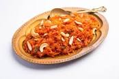

A carrot-based dessert that you'll often find at weddings. A carrot-based dessert that you'll often find at weddings. Shutterstock Also known as gajar ka halwa, this dish is made using a combination of grated carrots, nuts, milk, sugar and clarified butter. Best served with a scoop of ice cream on the side, this flavorful but light dessert often makes an appearance at weddings and parties.
